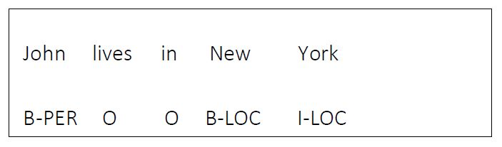
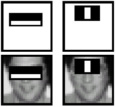
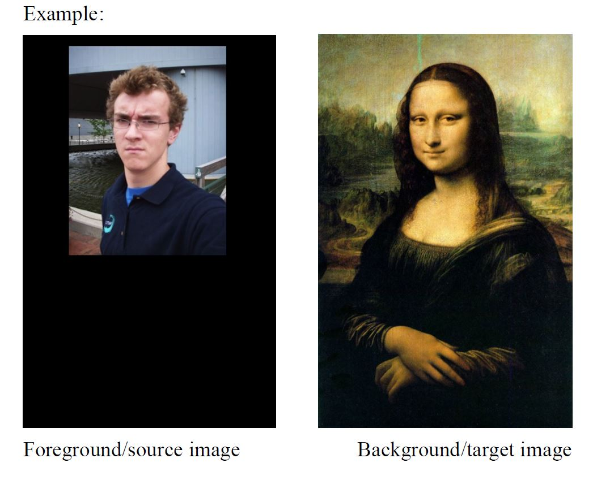
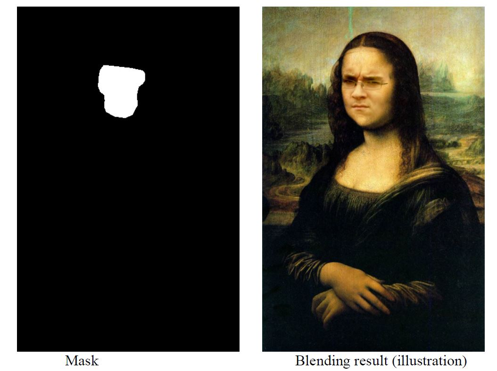
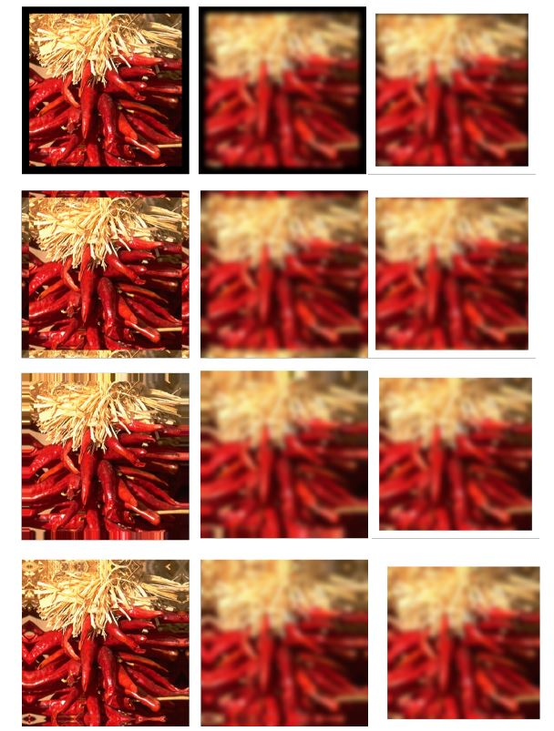
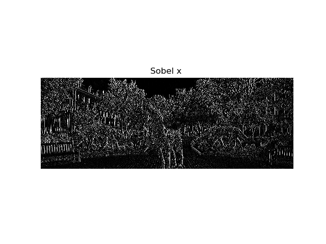
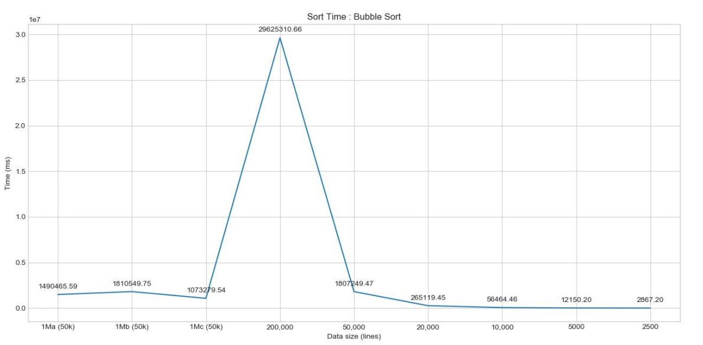
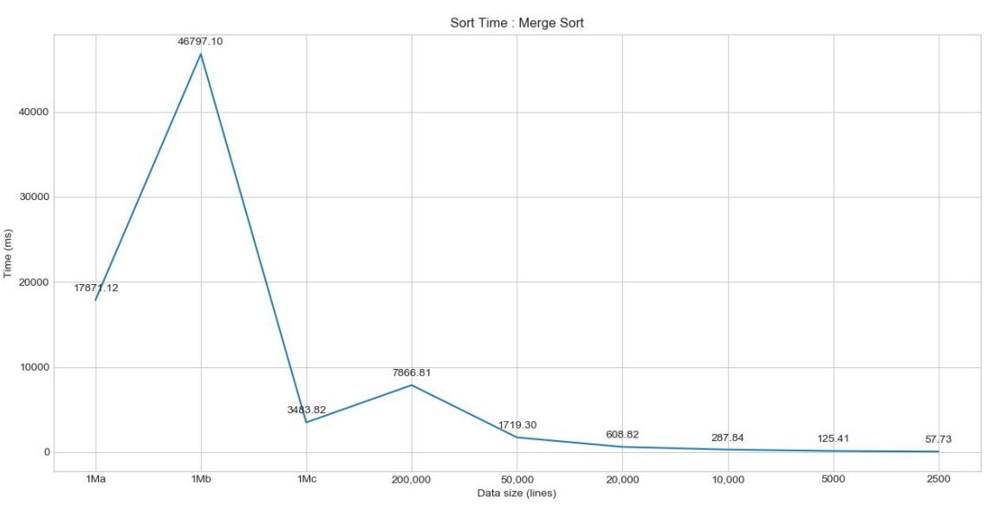
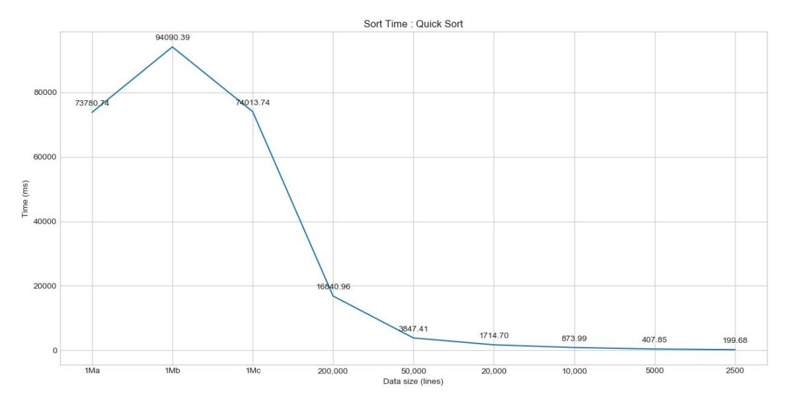

PROJECTS
In this project, the task of medicine name identification from Drug Label bottles using Optical Character Recognition for image to text conversion and Named entity recognition for identifying the entity of the text from OCR was investigated.
This can be seen from the image below.
Given an image of a drug bottle, medicine name has to be idenitified and bounding boxes drawn around it.
Note: The green bounding box represents the medicine name "PANTOPRAZOLE"
Other parameters can also be identified such as in the example shown below using spacy's med7 model. Such as given the input text :'A patient was prescribed Magnesium hydroxide 400mg/5ml suspension PO of total 30ml bid for the next 5 days.', the results would be:
This involes two steps:
- Optical character recognition for image to text conversion
- Named entity recognition for identifying medicine name
Tesseract Optical Character Recognition:
- For dateset generation and model training, three methods were used. The first involved using AWS Rekognition, second one involved using font files for synthetic data generation, whereas the third one involved using hocr-tools for generating image line data for Tesseract-OCR training.
- Various factors such as base model for model training, Configuration parameters such as Page Segmentation Mode, Thread limit, Preprocessing factors such as Re scaling method and size, different threshold methods for Binarization (Simple and Adaptive threshold) were analyzed for improving performance.
Named Entity recognition:
- Dataset generation in B-I-O tagging format

- Various models such as Memory tagger, Random forest classifier, Conditional Random Fields, Sequence tagging using LSTM were trained and their performance analyzed.
The final model had an accuracy of 76% with an average time of 1 second per image as compared to the baseline tesseract with 50% accuracy and an average time of 2.24 second per image.
The report contains detailed instructions for the steps explained above.
CNN-for-Leaf-Wilting-Detection-in-Soybean-Crops
- Transfer learning (vgg-19) with data augmentation techniques for multi-classification of soybean crop images
- Semi-supervised Learning using unlabeled images based on ladder network where both supervised and unsupervised (autoencoder) parts are trained simultaneously to minimize the loss
Face image classification using Gaussian model, Mixture of Gaussian model, tdistribution, Factor Analysis
Data Preparation (Data_Conversion.py)
Extract 𝑛 = 1000 training images for face and non-face respectively, and 𝑚 = 100 testing images for face and non-face respectively from one of the provided 17 face datasets which has face bounding boxes
annotated, both at 20 × 20 resolution. Make sure training face images and testing face images are separate, that is no face testing images are from the same person in the training set of face
images. And, non-face images should be cropped randomly from background in the provided images in the dataset you selected.
Tasks
With your own face dataset created, you can train your models and test the performance.
For each model, report results as follows.
- Visualize the estimated mean(s) and covariance matrix for face and non-face
respectively;
- Evaluate the learned model on the testing images using 0.5 as threshold for the posterior.
Compute false positive rate (#negatives being classified as faces / #total negatives), and
false negative rate (#positives being classified as non-face / #total positives), and the
misclassification rate ((#false-positives + #false-negative)/#total testing images)
- Plot the ROC curve where x-axis represents false positive rate and y-axis true positive
rate (i.e, 1-false negative rate).
Adaptive Boosting (AdaBoost) for Face Detection
Reuse the dataset from above
Use Harr feature. Compute the value of each Harr feature for each sample. Each feature corresponds to a weak learner. Determine the threshold between face samples and non-face samples for all the weak learners.
Calculate the classification error for each weak learner and draw the best ten features

Implement the Adaboost Algorithm and plot the ROC
Convolutional Neural Networks for face image classification
- Preprocess the data and select data augmentation
- Select the architecture
- Double check that the loss is reasonable without regularization
- Check loss with high regularization
- Overfitting with small data set.
- Checking loss with very small learning rate
- Checking loss with very high learning rate
- Checking loss for an upper bound for learning rate
- Hyperparameter tuning – Course to fine
- Model training and plots for validation loss and accuracy.
Face Verification and Recognition
Face Verification - "is this the claimed person?". For example, at some airports, you can pass through customs by letting a system scan your passport and then verifying that you (the person carrying the passport) are the correct person. A mobile phone that unlocks using your face is also using face verification. This is a 1:1 matching problem.
Face Recognition - "who is this person?". For example, the video lecture showed a face recognition video of Baidu employees entering the office without needing to otherwise identify themselves. This is a 1:K matching problem.
FaceNet learns a neural network that encodes a face image into a vector of 128 numbers. By comparing two such vectors, you can then determine if two pictures are of the same person.
In this project, the following things were implemented:
- Implement the triplet loss function
- Use a pretrained model to map face images into 128-dimensional encodings
- Use these encodings to perform face verification and face recognition
The problem of finding the optimal parameters of the model is transformed into an LQR problem which minimizes the human effort and optimizes the closed-loop behavior.
As the human model is difficult to estimate, Reinforcement learning is used in the paper to solve the LQR problem.
The plan for the project consisted of two tasks.
- The first part was the application of integral reinforcement learning
- the second part was using a neural network to find the optimal solution for LQR.
Image Blending
This project contains the following implementations:
Implement Gaussian and Laplacian pyramid, 𝑔𝑃𝑦𝑟, 𝑙𝑃𝑦𝑟 = 𝐶𝑜𝑚𝑝𝑢𝑡𝑒𝑃𝑦𝑟(𝑖𝑛𝑝𝑢𝑡𝑖𝑚𝑎𝑔𝑒, 𝑛𝑢𝑚𝑙𝑎𝑦𝑒𝑟𝑠)
Input arguments : 𝑖𝑛𝑝𝑢𝑡𝑖𝑚𝑎𝑔𝑒 is an input image (grey, or RGB), 𝑛𝑢𝑚𝑙𝑎𝑦𝑒𝑟𝑠 is the number of layers of the pyramid to be computed.
Depending on the size of 𝑖𝑛𝑝𝑢𝑡𝑖𝑚𝑎𝑔𝑒, 𝑛𝑢𝑚𝑙𝑎𝑦𝑒𝑟𝑠 needs to be checked if valid.
If not, use the maximum value allowed in terms of the size of 𝑖𝑛𝑝𝑢𝑡_𝑖𝑚𝑎𝑔𝑒.
Outputs: 𝑔𝑃𝑦𝑟, 𝑙𝑃𝑦𝑟 are the Gaussian pyramid and Laplacian pyramid respectively.
Write a simple GUI to create a black/white binary mask image. The GUI can open an image (e.g. the foreground image that you will use in blending); On the image, you can select a region of interest using either a rectangle or an eclipse, [optional] even some free-form region. Based on the opened image and the selected regions, the GUI can
generate a black/white mask image of the same size as the opened image, in which the selected region(s) are white and the remaining black.
On top of the functions in (a) and (b), write a function to implement Laplacian pyramid blending
Example:


Two-dimensional_Convolution
Write a function to implement 𝑔 = 𝑐𝑜𝑛𝑣2(𝑓,𝑤, 𝑝𝑎𝑑), where 𝑓 is an input image (grey, or RGB), 𝑤 is a 2-D kernel (e.g., 3 × 3 box filter), and 𝑝𝑎𝑑 represents the 4 padding type :
clip/zero-padding, wrap around, copy edge, and reflect across edge, as illustrated in the following example

Example Output of Convolution funciton for Sobel_X filter:

2D FFT
Using the built-in 1-D FFT to implement 𝐹 = 𝐷𝐹𝑇2(𝑓) from scratch, where 𝑓 is an input grey image.
Using the DFT2 to implement the inverse FFT of an input transform 𝐹, 𝑔 = 𝐼𝐷𝐹𝑇2(𝐹) from scratch.
Smoothness Prior
Given an image 𝐼, consider all valid pairs of neighboring pixels, compute the difference between their intensity or color values, and plot the histogram.
- Neighbors: e.g., for a 100x100 image, consider all valid pairs of (𝑥, 𝑦) and
(𝑥 + 1, 𝑦).
- Difference: using the squared of difference for intensity, RGB, HSV and Lab.
- Histogram: Visualize the histogram.
Sorting
In this assignment, 3 sorting algorithms were implemented: bubble sort, quick sort, and
merge sort and compared again files of different sizes starting from 2500 lines to 1 million lines
The following plots are recorded for growth of sorting time as a function of data size:
Note, that in bubble sort, for 1Ma, 1Mb, 1Mc, only 50000 lines are used due to
excessive time requirements. Also, 1Ma, Mb and 1Mc files have 1 million lines with different configurations



Regular Expressions
Design and implement solutions for the following problems.
DIALOG: Given a list of input files similar to the sample files (but not previously known), extract
all the dialog into a separate output file. In the output, retain the quotation or other
marks that separate the dialog from the narrative.
DIALOG SEARCH: Given one input file similar to the sample files (but not previously known),
and a search string, determine if the search string appears within dialog in the sample
file. If it does, then output each Chapter number/title (equivalently for anthologies,
the number/name of the individual work) in which the search string appears.
Example:
DIALOG
To run the script, navigate to the appropriate folder and run the script dialogscript.py
The result of running this script is as follows:
File output successful with file name outputdracula.txt
File output successful with file name outputsh.tx
These files contains all the dialog sepearated into a separate output file.
DIALOG SEARCH
To run the script, navigate to the appropriate folder and run the script dialogsearchscript.py
The result of running this script is as follows:
filename : dracula.txt
search string : red eyes
Found in CHAPTER VII CUTTING FROM "THE DAILYGRAPH," 8 AUGUST
Found in CHAPTER VII CUTTING FROM "THE DAILYGRAPH," 8 AUGUST
Found in CHAPTER XI Lucy Westenra's Diary.
Found in CHAPTER XIX JONATHAN HARKER'S JOURNAL
Found in CHAPTER XXVII MINA HARKER'S JOURNAL
Diff using dynamic programming approach to Longest Common Subsequence
This assignment had the following three parts:
- Implement a hash function for strings. Use a modulo function to compress the resulting value to 10 bits, i.e. to be in the range [0, 1023].
- Use your hash function to implement a hashfile program that takes a filename on
the command line and produces a 10-bit hash of each line.
- Implement the dynamic programming algorithm for diff, using the dynamic programming
approach to the Longest Common Subsequence problem. Use the code from your hashfile
implementation.
Shortest-Path using Breadth-First-Search
Finding the 4-, 8-, or m-shortest path in an image (graph)
- Input arguments: an image, a predefined set V, two pixel locations p and q
inside the image, the path type (4-, 8-, or m-path)
- Outputs: the length of the shortest path, and the path (i.e., the sequence of
pixels)